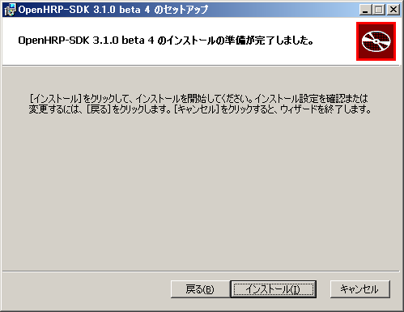
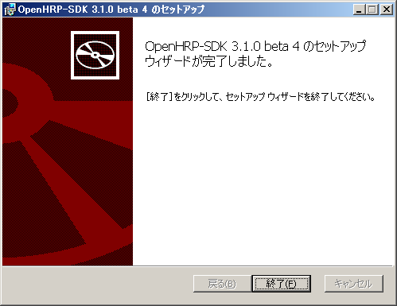
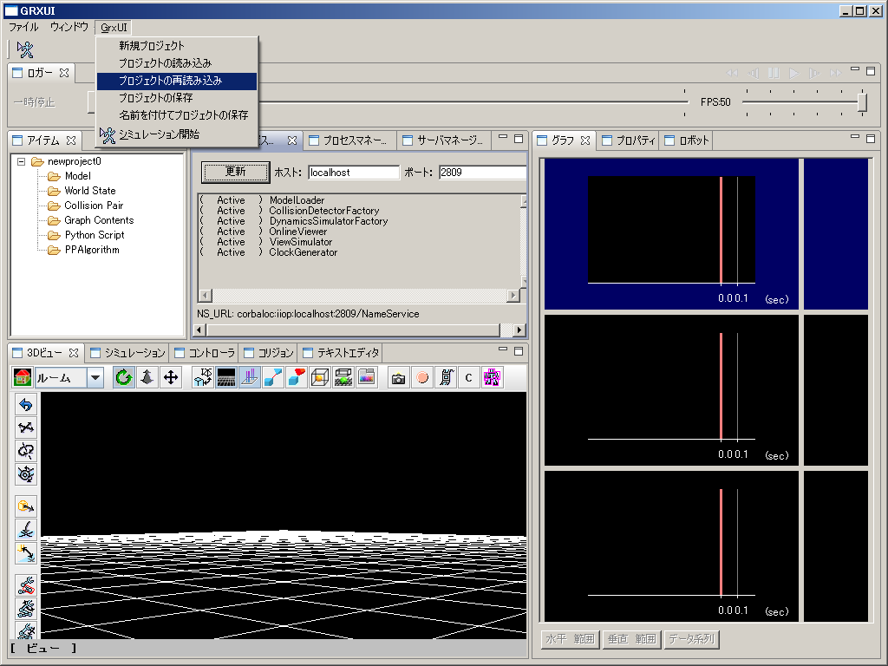
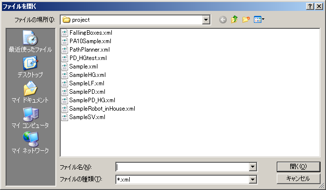
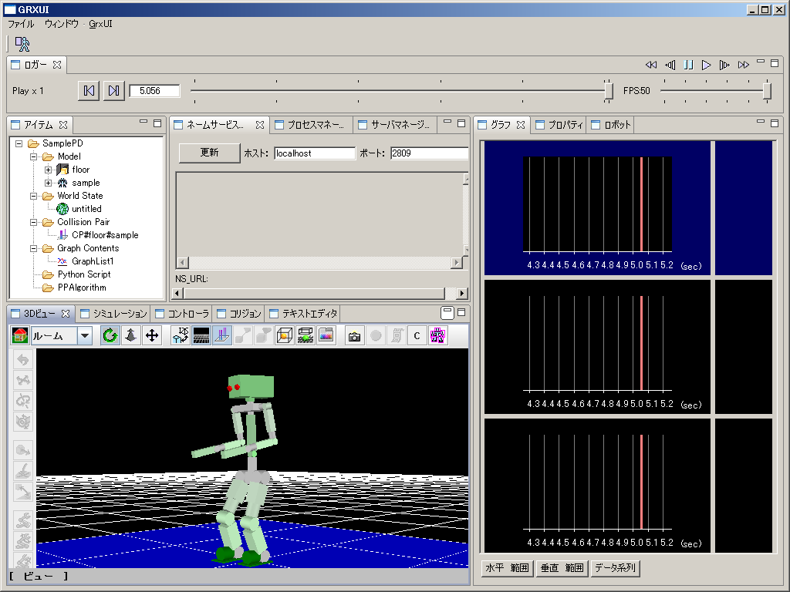

OpenHRPSDK
OpenHRPSDK is a binary package containing OpenHRP and an executable file. Required softwareOpenHRPSDK has a version for VS2008(32bit), for VS2010 32bit, and for VS2010 64bit. Please install the following software according to these.
Even if you are using 64 bit OS, please install a 32 bit version for 32 bit OpenHRP. Software required in order to create a controller
or
Note: Express Edition cannot build 64 bits binary by default. The following software is also required to use a Jython script.
Before you beginPlease confirm that if your "Computer Name" is not longer than 8 letters and contains alpha-numeric letters only. Unless the Nameserver will not be started normally. Please refer here for more details. Install
  Composition of a fileFiles are installed in the specified directory as follows.
OpenHRPSDK/ # Install directory
+- bin/ # The executable file of OpenHRP, omniNames.exe, DLL
+- etc/ # The configuration file of vsprops required for controller creation
+- GrxUI/ # Eclipse RCP products of GrxUI
+- GrxUI.exe # GrxUI Starting file
+- include/ # OpenHRP, OpenRTM, OmniORB, The header of libraries
+- lib/ # OpenHRP, OpenRTM, OmniORB, libraries
+- License/ # License document
+- share/ # Sample
+- utils/ # The tool for RT component creation
+- epl-v10.html # Eclipse Public License v1.0 License document
+- license-en.txt # License document(English)
+- license-ja.txt # License document(Japanese)
Environment variable OPENHRP_SDK_ROOT is added as an installation directory.
Execution of a sample simulation
Please specify (Install directory)/bin as server install directory.
Please specify (Install directory)/share/OpenHRP-3.1/sample/project as project install directory.
  First, let's choose SamplePD.xml. A robot is displayed on a lower left view.  It is a success when a robot begins to walk. Please try other sample projects. Controller creation
In Visual C++2008, please create the skeleton of a component using "%OPENHRP_SDK_ROOT %\utils\rtc-template\rtc-template.py". UninstallPlease delete this program from the [Add/Remove Programs] of the [control panel]. |